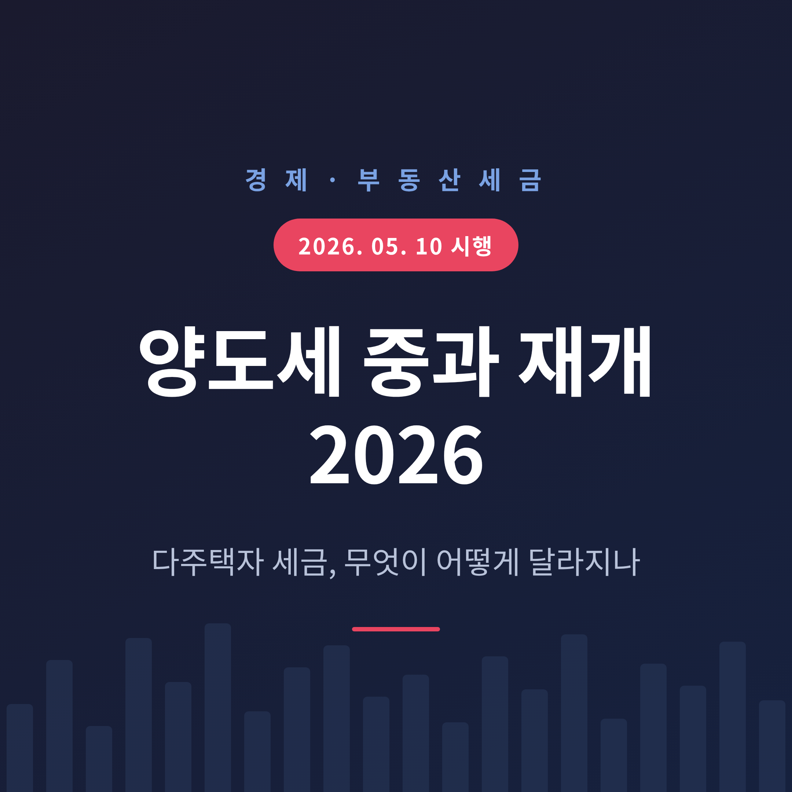
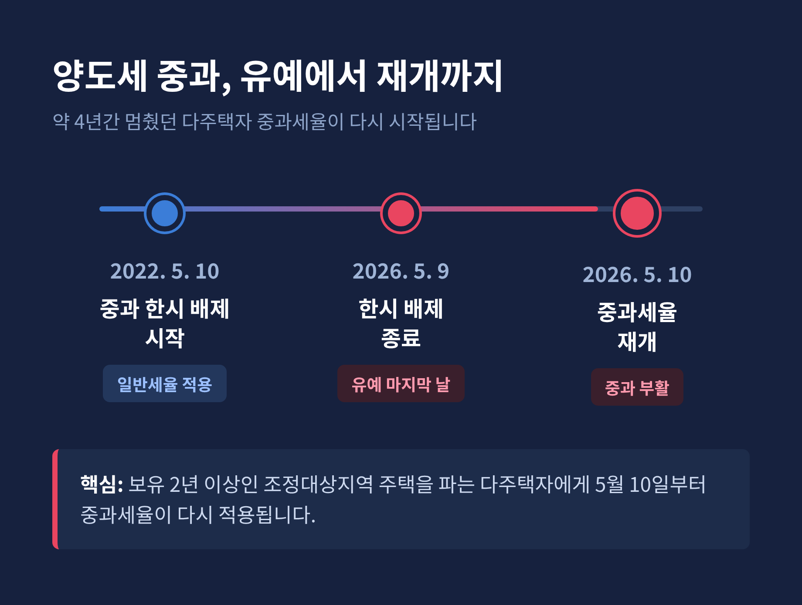
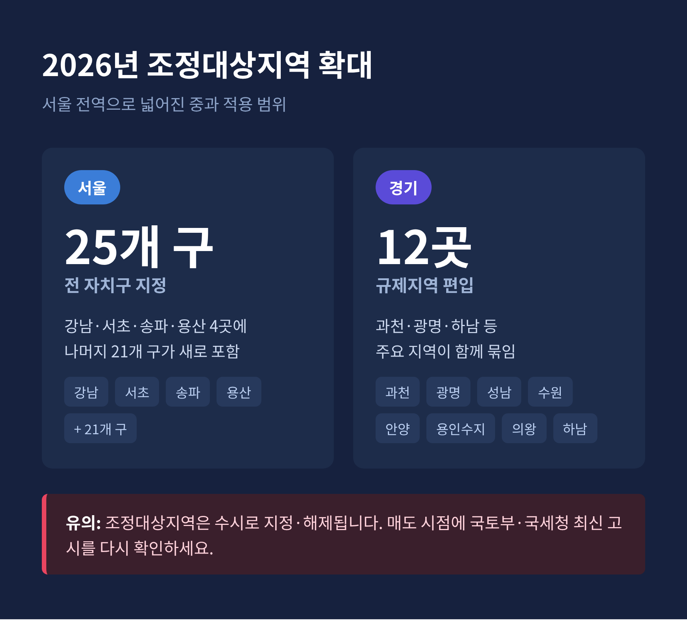
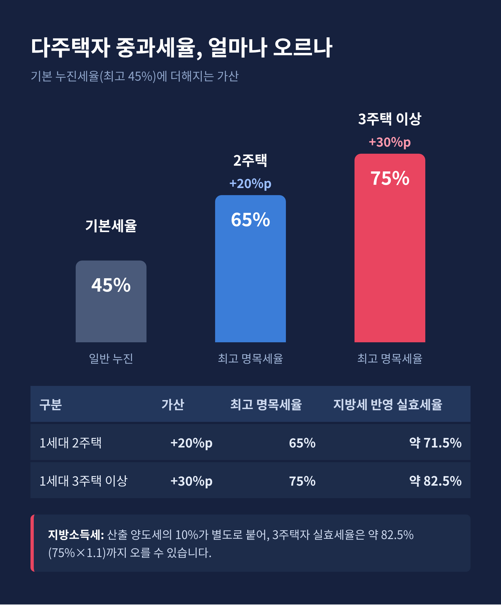

2026년 5월 10일부터 다주택자 양도세 중과가 약 4년 만에 다시 시작되었습니다. 이번 글에서는 무엇이 바뀌었고, 누가 대상이며, 세 부담이 어떻게 늘어나는지를 차분히 정리해 보겠습니다.
먼저 세 줄로 요약합니다.
예전엔 다주택자도 한숨 돌릴 수 있었습니다. 지금은 사정이 달라졌습니다.
정부는 2022년 5월 10일부터 다주택자가 조정대상지역 주택을 팔 때 적용되던 양도세 중과를 한시적으로 멈춰 왔습니다. 이 기간에는 중과세율 대신 일반 누진세율(6~45%)만 적용됐고, 요건을 갖추면 장기보유특별공제도 받을 수 있었습니다.
이 한시 배제가 2026년 5월 9일자로 끝났습니다. 정부는 2026년 2월 두 차례에 걸쳐 "유예 연장은 없으며 예정대로 종료한다"고 공식 확인했습니다.
그 결과 2026년 5월 10일부터, 보유 2년 이상인 조정대상지역 주택을 파는 다주택자에게 중과세율이 다시 붙습니다. 약 4년 만의 부활인 셈입니다.

핵심은 두 가지입니다. 지역과 주택 수입니다.
중과는 조정대상지역 안에 있는 주택을 팔 때만 적용됩니다. 규제지역이 아닌 곳의 주택은 다주택자라도 원칙적으로 일반세율(6~45%)이 적용됩니다.
주택 수 산정도 단순하지 않습니다. 등기된 집만 세는 것이 아니라, 조합원 입주권과 분양권, 주거용 오피스텔도 조건에 따라 주택 수에 포함될 수 있습니다. 겉보기엔 2주택인데 세법상 3주택으로 계산되는 경우도 있습니다.
여기에 2026년 들어 적용 범위가 크게 넓어졌습니다. 2025년 10월 지정 확대로 서울 25개 자치구 전역이 조정대상지역이 됐습니다. 기존 강남·서초·송파·용산 네 곳에 더해 나머지 21개 구가 새로 들어왔습니다. 경기 12곳(과천, 광명, 성남 분당·수정·중원, 수원 영통·장안·팔달, 안양 동안, 용인 수지, 의왕, 하남)도 규제지역으로 묶였습니다.
서울에 집을 둔 다주택자 상당수가 중과 대상에 들어오게 된 셈입니다. 다만 조정대상지역은 수시로 지정·해제되므로, 파는 시점에 국토교통부·국세청 최신 고시를 다시 확인하시길 권합니다.

먼저 일반 양도소득세 기본세율표를 봅니다.
| 과세표준 | 세율 | 누진공제액 |
|---|---|---|
| 1,400만원 이하 | 6% | 0 |
| 1,400만 ~ 5,000만원 | 15% | 126만원 |
| 5,000만 ~ 8,800만원 | 24% | 576만원 |
| 8,800만 ~ 1.5억원 | 35% | 1,544만원 |
| 1.5억 ~ 3억원 | 38% | 1,994만원 |
| 3억 ~ 5억원 | 40% | 2,594만원 |
| 5억 ~ 10억원 | 42% | 3,594만원 |
| 10억원 초과 | 45% | 6,594만원 |
산출세액은 '과세표준 × 세율 − 누진공제액'으로 구합니다. 여기에 중과가 붙으면 구간별 세율이 한 단계 위로 올라갑니다.
| 구분 | 가산 | 최고 명목세율 |
|---|---|---|
| 1세대 2주택 | +20%p | 65% |
| 1세대 3주택 이상 | +30%p | 75% |
여기서 끝이 아닙니다. 산출 양도세의 10%가 지방소득세로 따로 붙습니다. 이를 반영하면 3주택자의 최고 실효세율은 약 82.5%(75% × 1.1) 수준까지 오를 수 있습니다.
단기 보유는 별도 규정이 있습니다. 1년 미만은 70%, 1년 이상 2년 미만은 60% 단일세율입니다. 조정대상지역 주택을 단기 보유 후 팔면, 중과세율로 계산한 세액과 단기보유 세율로 계산한 세액 중 더 큰 쪽을 냅니다.
다만 위 수치는 자료 기준입니다. 실제 신고에서는 취득가, 필요경비, 기본공제(연 250만원) 등이 반영되어 단순 적용과는 달라집니다.

세율 가산만 보면 절반의 그림입니다. 숨은 핵심은 장기보유특별공제(장특공)입니다.
장특공은 오래 보유한 부동산의 양도차익 일부를 공제해 주는 제도입니다. 일반적으로는 보유기간에 따라 최대 30%, 1세대 1주택에 2년 이상 실거주를 더하면 최대 80%까지 공제받을 수 있습니다.
그런데 중과 대상 주택은 이 장특공이 배제됩니다. 오래 보유했어도, 실거주 기간이 길어도 공제를 받지 못합니다.
즉 중과 재개의 부담은 세율 가산과 장특공 배제가 겹쳐 이중으로 커집니다. "세금이 크게 는다"는 말의 진짜 이유가 여기에 있습니다.
다만 1세대 1주택 요건을 충족하면 기존 장특공 규정이 그대로 적용될 수 있습니다. 그러니 지금 팔려는 집이 어떤 유형인지 구분하는 일이 먼저입니다.
정부는 유예 종료에 따른 충격을 줄이려 보완 방안을 마련했습니다.
계약 시점을 기준으로 한 중과 배제가 핵심입니다. 기존 조정대상지역(강남·서초·송파·용산) 주택은 5월 9일 이전 매매계약을 마치고 계약일로부터 4개월 안에 양도하면 중과를 피할 수 있습니다. 2025년 10월 신규 지정된 지역은 신규 지정을 감안해 6개월로 두 달 더 여유를 뒀습니다.
여기서 주의할 점이 있습니다. 양도세는 계약일이 아니라 잔금 지급일과 등기일 중 빠른 날을 기준으로 판단합니다. 종료 전에 계약만 했더라도 잔금·등기가 기준일을 넘기면, 보완 요건을 못 채우는 한 중과 대상이 될 수 있습니다.
무주택자에게 파는 경우에 한해 실거주 의무도 일부 완화됐습니다. 좋은 점과 아쉬운 점이 함께 있는 조치입니다. 충격을 덜어주긴 하지만, 적용 요건이 까다로워 모두에게 해당되지는 않습니다.
자주 언급되는 대응 방법을 정리합니다. 어느 것이든 조건과 위험이 따르므로 전문가 검토가 필요합니다.
시장 방향은 단정하기 어렵습니다. '정리 매도' 증가 가능성과 '매물 잠김' 심화 가능성이 함께 거론됩니다. 세금만이 아니라 대출·금리·공급 정책이 같이 움직이기 때문입니다.
1세대 1주택 실수요자는 원칙적으로 중과 대상이 아닙니다. 요건을 갖추면 장특공과 비과세 혜택도 유지됩니다. 다만 조정대상지역이 서울 전역으로 넓어진 만큼, 본인 주택의 유형과 요건을 한 번 더 확인해 보시면 좋겠습니다.
끝으로 한 마디만 더 드리겠습니다.
이번 변화의 핵심은 결국 하나입니다.
— "세율이 오른 것이 아니라, 내 집이 어떤 집인지가 더 중요해졌다."
같은 다주택자라도 지역, 주택 수, 보유·거주 기간에 따라 결과는 전혀 다르게 나옵니다. 숫자를 외우기보다, 내 상황을 정확히 들여다보는 일이 먼저입니다.
세법은 복잡하고 개별 사정에 따라 크게 달라집니다. 중요한 결정을 앞두고 계신다면, 단순한 세율 비교에 기대기보다 전체 보유 포트폴리오를 함께 살펴줄 전문가를 찾으시길 권합니다.
내 집의 셈법이 달라진 지금, 가장 먼저 확인할 것은 세율표가 아니라 내 집의 '신분'이 아닐까요.